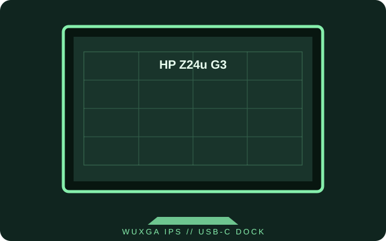

[ INDIVIDUAL COMPONENT // DISPLAYS ]
HP Z24u G3
A 23.8-inch WUXGA IPS workstation display with USB-C docking and an ergonomic stand.

IDENTIFICATION: The Z24u G3 is a WUXGA LCD monitor; do not confuse it with HP Z-series displays of other sizes or resolutions.
Specifications
| Catalog subcategory | LCD displays |
|---|---|
| Exact product | HP Z24u G3 WUXGA USB-C Display |
| Panel and native resolution | 23.8-inch IPS LCD, 1920 × 1200 (16:10) |
| Native refresh | 60 Hz at native resolution |
| Luminance / contrast | 350 cd/m² typical; 1000:1 typical |
| Inputs / companion ports | HDMI 1.4, DisplayPort 1.4, USB-C with DisplayPort Alt Mode and up to 100 W host charging, USB-A hub, RJ45 Ethernet |
| Stand / VESA | Height, tilt, swivel and pivot adjustment; 100 × 100 mm VESA mounting |
| Power / compatibility | AC mains powered; use the supplied power cord and check the rear label for the unit's regional input rating. USB-C video/charging requires a compatible host and cable; available charging is bounded by the host and monitor power specifications. |
Preservation notes
Record the monitor's product number and regional label, because HP documentation can distinguish configurations by product number. Verify USB-C video and power negotiation with the actual computer before treating the display as a one-cable dock.
Manufacturer documentation and sources
- HP — Z24u G3 WUXGA USB-C DisplayManufacturer product information and feature specifications.
- HP Support — Z24u G3 setup and user guidesModel support and setup documentation from HP.